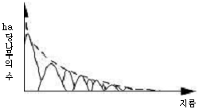
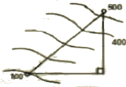
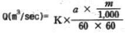
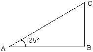
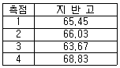
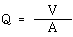
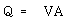
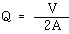
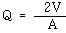

산림기사 (2007-08-05 기출문제)
1과목: 조림학
1. 소나무의 개화에서 종자 성숙까지는 얼마나 걸리는가?
- 개화 후 3개월에 성숙한다.
- 개화 후 4개월에 성숙한다.
- 개화 후 그 해의 가을에 성숙한다.
- 개화 후 다음해 가을에 성숙한다.
(정답률: 74%)

2. 밤나무, 상수리나무, 굴참나무 등과 같은 전분종자의 저장 방법으로서 가장 알맞은 것은?
- 기건저장법
- 건사저장법
- 밀봉냉장법
- 노천 매장법
(정답률: 58%)
3. 다음 수목 중 자웅이주가 아닌 것은?
- 소나무
- 은행나무
- 꽝꽝나무
- 호랑가시나무
(정답률: 63%)
4. 다음 중 가지치기의 효과가 아닌 것은?
- 옹이 없는 완만재 생산
- 직경 생장 촉진
- 줄기의 완만도 조절
- 하층목의 보호 및 생존경쟁의 완화
(정답률: 49%)
5. 회귀년(回歸年)을 고려하여야 할 산림작업법은?
- 대상개벌 작업
- 대면적 산벌작업
- 산생모수 작업
- 순환택벌 작업
(정답률: 71%)
6. 산림 작업의 하나의 체계에 해당하는 숲이 다음과 같은 구조로 나타날 경우 어떻게 해석 할 수 있는가?

- 소교목, 중교목, 대교목으로 구성되어 있는 산림
- 순환벌채를 받고 있는 택벌림
- 벌채를 받은 일이 없는 산림
- 우리나라 소나무 숲에 흔히 나타나고 있는 구조
(정답률: 60%)
7. 묘목의 식재밀도에 관한 설명 중 바른 것은?
- 식재밀도가 낮으면 지름은 가늘지만 완만재가 된다.
- 식재밀도가 낮을수록 총생산량 중 가지의 비율이 낮아진다.
- 식재밀도가 높을수록 단목 재적이 빨리 증가한다.
- 일정면적에서 생산되는 양은 어느 식재밀도까지 본수가 많을수록 증가한다.
(정답률: 53%)
8. 다음의 무기원소 중 수목에 반드시 필요한 필수양료로 볼 수 없는 원소는?
- 질소(N)
- 망간(Mn)
- 철(Fe)
- 알루미늄(Al)
(정답률: 70%)
9. 조림 직후 조림지 풀베기 작업에 대하여 바르게 설명하고 있는 것은?
- 둘레베기는 소요 노동력을 크게 증가시킨다.
- 호두나무를 소식한 조림지는 모두베기를 하여 임지 하부를 깨끗이 정리한다.
- 낙엽송 조림지의 풀베기 작업은 식재 후 3 ~ 4년간 계속하는 것이 보통이다.
- 줄베기 작업은 묘목을 식재한 줄과 줄 사이에 자라는 풀과 잡목 및 관목을 제거하는 작업이다.
(정답률: 47%)
10. 다음 중 2-2-1 실생묘의 묘령을 옳게 설명한 것은?
- 파종상에서 2년, 그 뒤 두 번 상채된 일이 있고, 각 상채상에서 1년을 경과한 5년생 묘목이다.
- 파종상에서 2년, 그 뒤 세 번 상채된 일이 있고, 각 상채상에서 1년을 경과한 5년생묘목이다.
- 파종상에서 2년, 그 뒤 두 번 상채된 일이 있고, 각 상채상에서 2년경과 1년을 경과한 5년생 묘목이다.
- 묘령을 나타낸 적절한 답이 없다.
(정답률: 55%)
11. 다음 중 인공조림지의 무육작업 순서로 바람직한 것은?
- 가지치기 → 밑깎기 → 제벌 → 간벌
- 밑깎기 → 제벌 → 가지치기 → 간벌
- 가지치기 → 제벌 → 간벌 → 밑깎기
- 제벌 → 밑깎기 → 간벌 → 가지치기
(정답률: 50%)
12. 다음 중 임업묘포로서 적지가 아닌 곳은?
- 토양은 일반적으로 양료가 많은 점질토가 좋다.
- 5°정도의 완경사지가 좋다.
- 위도가 높고 한랭한 곳은 동남향이 좋다.
- 지하수위가 적절한 곳이 좋다.
(정답률: 63%)
13. 다음 중 수분과 수목생장의 관계를 설명한 것으로 틀린 것은?
- 수목이 영구위조점을 넘어서면 수분을 공급해 주어도 회복되지 않는다.
- 토양의 수분 가운데 수목이 이용 가능한 수분을 모세관수라고 한다.
- 토양의 수분포텐셜이 뿌리의 수분포텐셜보다 낮아야 식물 뿌리가 토양으로부터 수분을 흡수할 수 있다.
- 수분의 증산은 기공의 공변세포의 칼륨펌프와 관련이 있다.
(정답률: 67%)
14. 덩굴식물 가운데 조림목에 피해를 많이 주어 가장 문제가 되는 것은?
- 칡
- 머루
- 담쟁이
- 으아리류
(정답률: 57%)
15. 산림이나 묘포장 토양의 토양산도에 대하여 바르게 기술하고 있는 것은?
- 강 알칼리성 토양에서는 알루미늄이 쉽게 용출되어 수목의 뿌리에 해를 준다.
- PH 6.6 ~ 7.3인 토양에서는 미생물의 활동이 왕성하고 양료의 이용이 높으며, 부숙의 형성이 쉽게 진전된다.
- 토양의 PH가 8정도로 높아지면 토양 내 Mg나 Ca의 함량이 대폭 감소되고 Fe의 함량은 크게 증가된다.
- 소나무나 낙엽송은 PH 7 ~ 7.5의 토양산도를 유지하는 산림에서 잘 자란다.
(정답률: 58%)
16. 천연림보육에 대한 생태적 설명으로 틀린 것은?
- 미래목은 장차 미래에 효용가치가 높은 임목을 선정하되 실생묘보다 맹아목을 우선적으로 고려하여 선정하는 것이 좋다.
- 나무의 세력이 너무 왕성한 것은 제거하여 그 세력을 줄이고 미래목에 대한 영향이 없도록 한다.
- 하층임분은 숲 가꾸기를 통해서도 특별한 이유가 없는 한 그대로 두는 것이 좋다.
- 생육공간을 적당히 조절하며 적정 간격이 유지되도록 하며 간벌 간가지치기를 적절히 시행한다.
(정답률: 74%)
17. 다음 중 수목의 조직, 기관의 기능에 대한 설명으로 틀린 것은?
- 낙우송은 호흡근이 발달하여 침수상태에서도 생장할 수 있다.
- 후막조직은 세포벽이 두껍고 원형질이 없으며, 수목의 지탱 역할을 담당한다.
- 수목의 피목(lenticel)은 가스교환을 촉진하는 조직이다.
- 열대지방 수목의 판근(buttress)은 기계적으로 지지하는 역할은 하지만 호흡을 돕지는 않는다.
(정답률: 52%)
18. 채종원의 종자를 확보하기 위한 처리방법으로 맞지 않는 것은?
- 수광량이 많아 질 수 있도록 채종원을 관리한다.
- 질소비료의 과용을 피한다.
- 단근작업을 해 준다.
- 환상박피와 같은 스트레스를 주는 작업은 하지 않는다.
(정답률: 65%)
19. 모수작업법에 대한 설명으로 옳은 것은?
- 소나무를 보잔목으로 남길 때에는 ha당 50본 이상이어야 한다.
- 토양침식과 유실의 염려는 없다
- 소나무의 경우 수간이 통직하고 세지성(細枝性)이며 수관폭이 좁은 것이 모수로 알맞다.
- 모수로 남겨야 할 임목은 전 임목에 대해 본수로 5%이다.
(정답률: 46%)
20. 혼효림(mixed forest)의 장점으로 옳은 것은?
- 임목의 벌채비용 절감 등 시장성이 유리하다.
- 산림작업과 경영르 경제적으로 수행할 수 있다.
- 바라는 수종으로 임분을 용이하게 조성할 수 있다.
- 각종 피해 인자에 대한 저항력이 증가한다.
(정답률: 70%)
2과목: 산림보호학
21. 전염성 수병의 원인이 아닌 것은?
- 진균
- 세균
- 광독(鑛毒)
- 바이러스
(정답률: 75%)
22. 다음 중 인공적으로 배양할 수 있는 병원균은?
- Phytoplasma
- Bacteria
- Virus
- Powdery mildew
(정답률: 50%)
23. 다음 중 표징을 나타낸 것은?
- 오동나무 잎이 작고 연한 녹색으로 되고 잔가지가 많이 발생하였다.
- 벚나무 잎에 갈색의 반범이 형성되더니 구멍이 뚫렸다.
- 잣나무 줄기에 황색의 포자 주머니가 생겼다.
- 소나무 잎이 5 ~ 6월에 누렇게 되면서 낙엽이 되었다.
(정답률: 68%)
24. 수목 뿌리혹병(crown gall) 세균의 침입장소로 가장 거리가 먼 것은?
- 지하부의 접목 부위
- 삽목의 하단부
- 뿌리의 절단면
- 뿌리의 기공
(정답률: 69%)
25. 묘목이 어느 정도 자라서 목화(木化)된 후에 뿌리가 침해되어 부패되는 모잘록병의 피해형은?
- 도복형
- 지중부패형
- 수부형
- 근부형
(정답률: 62%)
26. 병의 발생이 진딧물 및 깍지벌레와 같은 해충과 밀접한 관계를 가지고 있는 것은?
- 흰가루병
- 그을음병
- 줄기마름병
- 정무늬병
(정답률: 66%)
27. 겨울포자가 발아해서 전균사 상에 형성된 포자명은?
- 녹병포자
- 여름포자
- 녹포자
- 담자포자
(정답률: 58%)
28. 다음 수목병해 방제법 중 무육작업에 의한 방제의 예로 가장 적합한 것은?
- 중간기주가 되는 식물의 분포가 많은 곳에는 조림을 하지 않는다.
- 항구, 공항 및 국제 우편국에서 종자, 생목, 삽수, 목재에 검사를 한다.
- 약제를 수간에 주사한다.
- 토양소독, 종자소독을 실시한다.
(정답률: 60%)
29. 파이토플라스마에 의한 수병의 방제 약제는?
- 스트렙토 마이신
- 엑티디이온 BR
- 가스가마이신
- 옥시테트라싸이클린
(정답률: 72%)
30. 박쥐나방에 대한 설명으로 틀린 것은?
- 1년 1회 발생하며 알로 월동한다.
- 유충이 나무줄기를 가해한다.
- 유충은 똥을 밖으로 내보내지 않는다.
- 초본류의 줄기에도 구멍을 뚫고 가해한다.
(정답률: 67%)
31. 다음 중 가해식물의 종류가 가장 많은 산림 해충은?
- 흰불나방
- 솔나방
- 텐트나방
- 솔잎혹파리
(정답률: 75%)
32. 나무좀, 하늘소, 바구미 등과 같은 천공성 해충을 방제하는데 가장 알맞은 방법은?
- 온도처리법
- 통나무 유살법
- 경운법
- 잡아 죽이는 방법
(정답률: 72%)
33. 다음 중 솔잎혹파리의 기생성 천적이 아닌 것은?
- 솔잎혹파리먹좀벌
- 혹파리원뿔먹좀벌
- 혹파리살이먹좀벌
- 혹파리등뿔먹좀벌
(정답률: 71%)
34. 다음 중 수목에 혹(충영)을 형성하는 해충은?
- 텐트나방
- 밤나무순혹벌
- 오리나무잎벌레
- 박쥐나방
(정답률: 71%)
35. 다음 중 내화력이 상대적으로 가장 강한 침엽수종은?
- 삼나무
- 은행나무
- 편백
- 곰솔
(정답률: 49%)
36. 다음 중 좁은 의미의 약해(phytotoxicity)의 정의로 가장 옳은 것은?
- 농약 사용에 의하여 야생동물, 가축이 입는 피해
- 농약 사용에 의하여 방제대상이 아닌 식물이 입는 피해
- 농약 사용에 의하여 꿀벌, 누에, 천적곤충 등 유용곤충이 입는 피해
- 잔류농약에 의한 생태계의 파괴
(정답률: 52%)
37. 곤충의 증식을 억제하는 중요 인자가 아닌 것은?
- 식이(먹이)
- 기상조건
- 천적
- 타감작용
(정답률: 69%)
38. 농약의 독성을 표시하는 단위에서 LD50 이란?
- 50% 치사에 필요한 농약의 농도
- 50% 치사에 필요한 농약의 종류
- 50% 치사에 필요한 농약의 량
- 50% 치사에 필요한 시간
(정답률: 77%)
39. 해충의 약제저항성에 관한 설명으로 가장 거리가 먼 것은?
- 돌연변이 유전자군에 의한 요인이 가장 크다.
- 약제저항성은 생태적 특성이다.
- 약제에 대한 도태 및 생존의 결과이다.
- 약제저항성은 유전적 특성이다.
(정답률: 40%)
40. 다음 중 상륜(frost ring)에 대한 설명으로 옳은 것은?
- 조상의 피해로 인하여 나타나는 상해의 피해이다.
- 주로 추운 지방에서 고립목이나 임연부의 교목에서 주로 발생하는 상렬의 일종이다.
- 만상의 피해로 수목의 생장이 한 때 중지 되었을 때 나타나는 피해의 일종이다.
- 한겨울 수목의 완전휴면 기간 중 저온으로 인하여 치수에 발생하는 피해현상이다.
(정답률: 41%)
3과목: 임업경영학
41. 다음 중 종속적 임업경영에 대한 설명으로 가장 거리가 먼 것은?
- 주요 생산적 임업의 생산에 필요한 자재를 공급하는 임업경영이다.
- 주요 생산적 임업의 용역을 공급하는 임업경영이다.
- 어떤 주업경영의 생산을 내부적으로 지탱하기 위한 임업경영이다.
- 생산요소의 유휴화를 막고 그 이용율을 높여 경영전체의 수익을 높이기 위한 임업경영이다.
(정답률: 52%)
42. 산림경리 업무의 후업(後業)에 속하는 것은?
- 시업체계의 조직
- 시업관계 사항 조사
- 시업상 필요한 시설계획
- 시업의 조사(照査), 검정
(정답률: 57%)
43. 임목의 평균생장량이 최대가 될 때를 벌기령으로 정한것은?
- 공예적 벌기령
- 재적수확 최대의 벌기령
- 자연적 벌기령
- 화폐총수확 최대의 벌기령
(정답률: 71%)
44. 임지기망가(林地期望價)의 계산 인자가 아닌 것은?
- 주벌 및 간벌수익
- 조림비 및 관리비
- 이율
- 채취비 및 운반비
(정답률: 63%)
45. 산림화재의 손해액평정에 대한 설명 중 옳은 것은?
- 유령림일 때는 임목매매가에 의하여 평정한다.
- 장령림의 경우는 임목비용가에 의하여 평정한다.
- 식재직후의 임분에 대해서는 Glaser 법에 의하여 평정한다.
- 벌기 전후의 성숙림의 경우는 매매가에 의하여 평정한다.
(정답률: 40%)
46. 단면적계수 K = 4의 프리즘(prism)으로 셈한 본수가 10, 평균수고가 15m, 임분형수 0.5이면 각산정측정법(角算定測定法)으로 산출한 ha당 재적은?
- 200m3
- 300m3
- 400m3
- 500m3
(정답률: 62%)
47. 임업 이율을 보통 이율보다 낮게 책정해야 하는 이유가 아닌 것은?
- 산림소유의 안전성
- 생산기간의 장기성
- 산림관리 경영의 간편성
- 산림수입의 고소득성
(정답률: 61%)
48. 손익분기점의 분석을 위한 가정이 아닌 것은?
- 제품 한 단위당 변동비는 항상 일정하다.
- 제품의 생산 능률은 변한다.
- 고정비는 생산량의 증감에 관계없이 항상 일정하다.
- 제품의 판매 가격은 판매량이 변동하여도 변화되지 않는다.
(정답률: 70%)
49. 대학 연습림 관리소 건물의 장부원가가 5000만원이고, 폐기할 때의 잔존가치가 1000만원으로 예상되며 그 내용연수가 50년 이라고 할 때 이 건물의 연간 감가상각비를 정액법에 의해 계산하면 얼마가 되는가?
- 70만원
- 80만원
- 90만원
- 100만원
(정답률: 74%)
50. 산림문화 ㆍ 휴양에 관한 법률 시행령에 근거하여 자연휴양림으로 지정할 수 있는 산림이 아닌 것은?
- 자연 경관이 수려한 산림
- 계곡과 함께 수원이 풍부한 산림
- 1단지 구역 면적이 국 ㆍ 공유림 10ha 이상 사유림 20ha 이상의 산림
- 국민이 쉽게 이용할 수 있는 지역에 위치한 산림
(정답률: 61%)
51. 임업경영비를 바르게 표현한 것은?
- 임업조수익 - 임업경영비
- 임업현금지출 + 감가상가액 + 미처분 임산물 재고 감소액 + 임업생산 자재 감소액 + 주림목 감소액
- 임업현금수입 + 임산물 가계 소비액 + 미처분 임산물 증감액 + 임업생산 자재 재고 증가액 + 임목 생장액
- 임업 조수익 - 임업경영비 - 가족임금 추정액
(정답률: 77%)
52. 20년 전의 재적이 200m3이고 현재의 재적이 300m3일 때 재적성장률은 얼마인가?(단, 프레슬러의 공식을 이용한다.)
- 8%
- 6%
- 4%
- 2%
(정답률: 38%)
53. 산림경영의 지도원칙에 대한 설명 중 틀린 것은?
- 수익성 원칙은 최대의 이익 또는 이윤을 얻을 수 있도록 하는 것이다.
- 경제성 원칙은 합목적성의 원칙이라고도 하며, 수익성 실현읜 전제로 간주 될 수 있다.
- 생산성 원칙은 벌기평균재적생장량이 최대가 되는 벌기령을 택함으로써 실현될 수 있다.
- 합자연성 원칙은 삼림 수확을 연년 균등하게 영구히 존속할 수 있도록 하는 것이다.
(정답률: 61%)
54. 다음 임지기망가에 대한 설명 중 틀린 것은?
- 벌기가 짧을수록 커지나 어느 시기 최대에 도달한 후부터는 점차 감소한다.
- 조림비가 클수록 작아진다.
- 이율이 낮을수록 커진다.
- 간벌 수익이 클수록 커진다.
(정답률: 43%)
55. 주업적 임업경영의 발전도모 방법이 아닌 것은?
- 임지의 집단화
- 간단작업이 가능한 산림구성
- 삼림경영, 관리 조직의 정비
- 경영순환의 합리화
(정답률: 46%)
56. 임지의 경제적 위치의 양부를 나타내는 것은?
- 지위
- 지리
- 지세
- 입목도
(정답률: 31%)
57. 자연휴양림이 갖는 신체적, 정신적 주요 효과를 직접효과와 간접효과로 구분할 때 다음 중 직접효과는?
- 복지와 건강 증진
- 대기정화 기능
- 소음방지 기능
- 방화기능
(정답률: 62%)
58. 우리나라에서 국산재 거래에 통용되는 측정 방법은?
- 말구직경자승법
- 호퍼스 법
- 스크리브너 로그 룰
- 브레레튼 법
(정답률: 64%)
59. 이용자 안전관리에 있어서 위험사태가 발생하였을 경우 보일 수 있는 대처 자세가 아닌 것은?
- 회피
- 손해정도
- 전가
- 방치
(정답률: 52%)
60. 다음 중 마케팅 믹스의 중요 요소가 아닌 것은?
- 상품
- 가격
- 장소
- 프로그램
(정답률: 48%)
4과목: 임도공학
61. 임도 착공 지점의 표고가 100m, 도착 지점의 표고가 500m이고, 임도 종단경사를 6%로 한 임도를 시공하고자 한다. 임도 시공 예정 길이는? (단, 소수점 둘째자리에서 반올림하고, 임도 우회율은 적용하지 않는다.)

- 1.7km
- 4.0km
- 6.7km
- 8.3km
(정답률: 48%)
62. 임도 설치시 설계속도 40km/h 일 때 특수지형의 종단기울기(순기울기)는 몇 % 이하로 하는 것을 원칙으로 하는가?
- 3%
- 7%
- 9%
- 10%
(정답률: 69%)
63. 다음 중 지반조사에 이용되는 것이 아닌 것은?
- 오거 보링
- 관입 시험
- 케이슨 공법
- 파이프 때려박기
(정답률: 59%)
64. 다음 토목공사용 기계 중 굴착 기계가 아닌 것은?
- 로울러
- 불도우저
- 스크레이퍼
- 파워셔블
(정답률: 53%)
65. 임도의 시공시 흙쌓기공사 중 흙의 압축 또는 수축을 고려 할 때, 흙쌓기의 높이를 9 ~ 12m 로 한다면 더쌓기의 높이는 얼마로 하는 것이 바람직한가?
- 흙쌓기높이의 10 %
- 흙쌓기높이의 8 %
- 흙쌓기높이의 6 %
- 흙쌓기높이의 4 %
(정답률: 32%)
66. 노선측량의 결과 교각이 120°인 교각점에 곡선반지름 30m인 곡선을 설치하고자 한다. 이 교각점에 설치될 곡선의 길이는?
- 약 15.7m
- 약 31.4m
- 약 62.8m
- 약 125.7m
(정답률: 42%)
67. 다음 중 안전사고의 직접적인 발생 원인으로 볼 수 없는 것은?
- 작업원의 잘못된 행동
- 장비의 정비 불량
- 부적합한 작업방법
- 열악한 작업 환경
(정답률: 58%)
68. 임도노체 기본구조의 명칭을 아래부터 위로 순서대로 나열한 것은?
- 노반 → 노상 → 기층 → 표층
- 노상 → 노반 → 기층 → 표층
- 노상 → 노반 → 표층 → 기층
- 노반 → 노상 → 표층 → 기층
(정답률: 70%)
69. 1초 동안의 유량을 계산하는 다음과 같은 공식에서 m이 의미하는 것은?

- 유역면적
- 최대시우량
- 유출계수
- 최대강우강도
(정답률: 65%)
70. 임도밀도가 2m/ha인 양방향 집재가 가능한 평지 산림의 평균집재거리는?
- 5000m
- 2500m
- 1250m
- 625m
(정답률: 50%)
71. 시거란 차도 중심선상 1.2m 높이에서 당해 차선의 중심선상에 있는 높이 10cm인 물체의 정점을 볼 수 있는 거리를 말한다. 설계속도가 30km/h 일 때 안전시거는 얼마이상으로 하여야 하는가?
- 20m
- 30m
- 40m
- 50m
(정답률: 62%)
72. 횡단면 A1, A2, A3의 면적은 각각 5m2, 7m2, 9m2이고, A1~A2의 거리와, A2~A3의 거리는 각각 15m, 10m라 한다. 양단면적 평균법을 쓰면 3단면사이의 총토적은 얼마인가?
- 150m3
- 160m3
- 170m3
- 200m3
(정답률: 49%)
73. 임도의 종단물매가 4 %, 횡단물매가 3 %일때의 합성물매는?
- 3 %
- 5 %
- 7 %
- 9 %
(정답률: 69%)
74. 다음 중 영선에 관한 설명으로 틀린 것은?
- 경사면과 임도 시공기면과의 교차선이다.
- 노폭의 1/2 되는 점을 연결한 선이다.
- 임도시공시 절토와 성토작업의 기준선이 된다.
- 종단측량을 먼저 실시하여 영선을 정한 후 평면, 횡단측량을 한다.
(정답률: 67%)
75. 식생이 사면의 안정에 미치는 효과가 아닌 것은?
- 수목자체 무게로 인한 사면안정 효과
- 뿌리에 의한 토양고정 효과
- 증산작용에 의한 토양수분 감소 효과
- 강우차단에 의한 침식방지 효과
(정답률: 40%)
76. 임도의 3대 기능으로 볼 수 없는 것은?
- 산림의 공익적 기능의 고도발휘
- 임업 ㆍ 임산업의 진흥
- 미적 경관의 증진
- 지역진흥
(정답률: 74%)
77. 산악지역을 레벨측량으로 실시할 때 장애물이 있어 중간점이 많아질 경우 많이 사용되는 야장 기입법은?
- 고차식
- 이란식
- 기고식
- 승강식
(정답률: 59%)
78. A, B, C의 직각삼각형에서 AB는 수평거리. AC는 경사거리, BC는 높이라 할 때 AV는 62m, ∠CAB는 25°라면 BC는 얼마인가?(단, tan 25°= 0.466, tan 50°= 1.192)

- 약 26.5 m
- 약 28.9 m
- 약 57.8 m
- 약 73.9 m
(정답률: 45%)
79. 방위 N 30°30′W의 방위각으로 가장 적당한 것은?
- 30° 30'
- 110° 30'
- 210° 30'
- 329° 30'
(정답률: 29%)
80. 종단측량결과 다음과 같은 결과값을 얻었다. 측점 1과 측점 4를 연결하는 도로계획선을 설정할 때 이 계획선의 종단기울기는? (단, 지반고의 단위는 m, 중심말뚝 간격은 20m임)

- -4.2%
- +5.6%
- -5.6%
- +4.2%
(정답률: 55%)
5과목: 사방공학
81. 다음 중 가장 안정된 계천은?
- 자갈이 깔린 계천
- 왕모래가 깔린 계천
- 콘크리트로 만들어진 계천
- 세사가 바닥을 이룬 계천
(정답률: 20%)
82. 산지사방 선떼붙이기에서 6급 선떼붙이기의 떼 사용매수는?
- 1m당 12.50매
- 1m당 7.50매
- 1m당 6.25매
- 1m당 2.50매
(정답률: 80%)
83. 평균유속을 V(m/s), 유로 단면적을 A(m2)라고 할 때 유량(Q)은?




(정답률: 70%)
84. 콘크리트 혼합에서 골재 이외에 사용하는 혼합제로서 응결촉진 경화를 신속하게 할 목적으로 사용하는 재료는?
- 염화칼슘
- 규조토
- 규산백토
- 석회
(정답률: 78%)
85. 다음 중 산복 기초공사에 속하는 것은?
- 비탈다듬기
- 바자얽기
- 선떼붙이기
- 떼단쌓기
(정답률: 64%)
86. 찰쌓기로 돌을 쌓을 때 지름 3cm 정도의 물빼기 구멍은 얼마 마다 1개소씩 설치하는가?
- 0.5 ~ 1m2
- 2 ~ 3m2
- 5 ~ 7m2
- 10 ~ 13m2
(정답률: 60%)
87. 계간공작물 중 계류를 횡단하여 축설하는 것으로 공작물의 앞 뒤 다 같이 쌓아 올리며 다른 공작물에 비하여 규모가 제일 큰 것은?
- 사방댐
- 구곡막이
- 기슭막이
- 바닥막이
(정답률: 68%)
88. 다음 중 일반적인 사방댐의 구조물에 포함되지 않는 것은?
- 방수로
- 댐둑어깨
- 물받이
- 양수장
(정답률: 83%)
89. 사방댐의 필수 안정 요건이 아닌 것은?
- 전도에 대한 안정
- 바람에 대한 안정
- 지반 지지력에 대한 안정
- 제체의 파괴에 대한 안정
(정답률: 67%)
90. 산사태 발생의 인위적인 발생 인자가 아닌 것은?
- 지표수에 의한 침식
- 임도개설에 의한 침식
- 채석장 개설에 의한 침식
- 골프장 시공에 의한 침식
(정답률: 74%)
91. 비탈다듬기공사에서 상단의 단면적이 20m2, 하단의 단면적이 30m2이고 상하단의 거리가 10m일 때 평균 단면적법으로 토사량을 구하면?
- 100m3
- 150m3
- 200m3
- 250m3
(정답률: 56%)
92. 다음 중 돌골막이의 설명으로 틀린 것은?
- 쌓기 비탈물매는 대체로 1 : 0.3으로 한다.
- 길이 4 ~ 5m, 높이 2m 이내로 축설한다.
- 축설방향은 상류의 유심에 대하여 직각이 되도록 한다.
- 사방댐과는 달리 대수축만을 설치한다.
(정답률: 50%)
93. 다음 중 수제의 설명으로 틀린 것은?
- 돌출각도는 유심선에 대해 70 ~ 90°가 적당하다.
- 수제의 길이는 가능한 한 짧은 것을 많이 설치하는 것이 효과적이고 계폭의 1/3이내가 적당하다.
- 수제의 간격은 수제길이의 1.25 ~ 4.5배가 적당하다.
- 만곡부 바깥쪽은 안쪽보다 수제의 수를 적게 하고 간격도 넓게 한다.
(정답률: 64%)
94. 빗물에 의한 침식의 발생 순서로 올바른 것은?
- 우격침식 - 면상침식 - 누구침식 - 구곡침식
- 구곡침식 - 누구침식 - 우격침식 - 면상침식
- 면상침식 - 우격침식 - 구곡침식 - 누구침식
- 누구침식 - 면상침식 - 우격침식 - 구곡침식
(정답률: 67%)
95. 중력침식에 대한 설명 중 틀린 것은?
- 유수나 바람과 같은 독립된 외력의 작용에 의하여 발생하는 침식이다.
- 중력의 영향으로 비탈면에서 토사석력의 지괴가 이동하는 침식의 특수 형태이다.
- 지표상의 어느 지적에서 토층이 수분으로 포화되어 중력작용으로 토층이 집단적으로 밀리는 현상이다.
- 붕괴형 침식, 동상 침식, 지활형 침식, 유동형 침식 등이 이에 해당한다.
(정답률: 57%)
96. 비탈면 힘줄박기공법에 관한 설명으로 옳지 않는 것은?
- 비탈면의 토질이 혼효성으로 복잡하고 마사토로 구성되어 취급이 곤란한 곳에 시공한다.
- 지하수가 용출하거나 누수에 의한 침식이 심한 곳에 시공한다.
- 시공방법으로는 사각형틀모양, 삼각형틀모양, 계단상수평띠모양 등이 있다.
- 시공작업이 용이하고 시공기간도 짧아서 격자틀 공법에 비하여 능률적이다.
(정답률: 48%)
97. 단끊기에 대한 설명 중 틀린 것은?
- 비탈다듬기 후 계단 공사를 시공하기 위하여 실시한다.
- 계단나비는 일반적으로 50 ~ 70cm이다.
- 일반적으로 상부에서 하부 방향으로 진행한다.
- 단끊기 작업은 비탈다듬기가 끝난 즉기 실시한다.
(정답률: 42%)
98. Q = CIA로 나타내는 최대홍수량의 방법은? (단, Q : 최대홍수량, C : 유출계수, I : 강우강도, A : 유역면적이다.)
- 시우량법
- 홍수위흔적법
- 유출량법
- 합리식법
(정답률: 57%)
99. 계상에서 침식을 일으키지 않는 경우의 최대유속은?
- 야계유속
- 임계유속
- 수면유속
- 하상유속
(정답률: 62%)
100. 다음 계천 사방공작물 중 토사생산구역에서의 구곡침식의 방지가 주목적인 공작물은?
- 골막이
- 바닥막이
- 기슭막이
- 사방댐
(정답률: 62%)